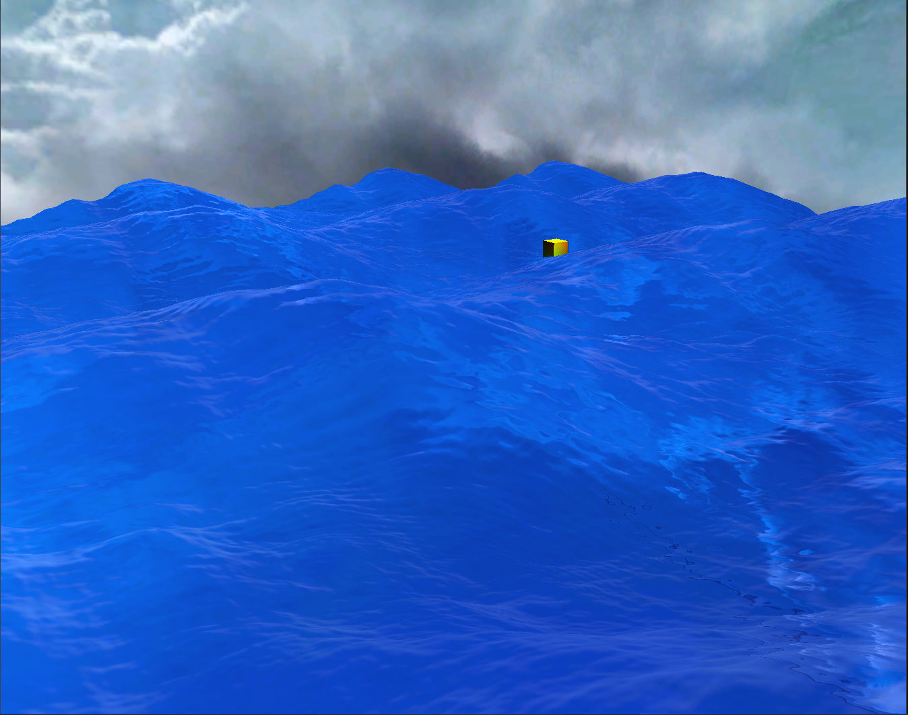

Rendering realtime ocean water
With OpenGL compute and tesselation shaders

Pew, this one took me some time! Allthough I always feel like I am not done with this feature at least in terms of shading, I have to write about it now, as I don't know when I will have enough time to get back at it. This is the current state of realtime ocean rendering in my custom made rendering engine:
If you want to know how it's done, I mainly followed this tutorial that is itself based on a paper by Jerry Tessendorf, you can find that on the internet. Since it wasn't really straight forward for me to get this done, even though the tutorial has most of the code needed and explained it as well, I am going to write a bit about it - maybe it might help someone around here or myself when I try to remember what I did there in a few years.
Theoretical background
When I started this endeavor, I just wanted to implement support for tesselation shaders in my custom render engine with a decent showcase. Retrospectively, I should have chosen static height mapped bricks for that.
I initially planned copy-pasting the required math after obtaining a minimal understanding of the theoretical background. And this might have worked for a simple CPU implementation with a simple ray tracer. Implementing height map generation with compute shaders and rendering a dynamically tesselated plane triangle mesh with a physically based deferred render engine however, introduced so many moving parts and possibilities for errors, that at some point I needed to go into the details.
The short summary is: We can look at the ocean as if it is a surface only and ignore its volume for now. Furthermore, we approximate the surface as a bunch of discrete points. To be more precise: As a set of three dimensional vectors describing a displacement of a point on a plane, as a regular grid. The displacement real world water shows can be approximated by adding together a bunch of Gerstner waves. The more waves one uses, the more realistic can the result potentially look. The waves are mostly produced by wind and gravitation and their forms follow some distributions. This is a nice video visualizing what those waves give you.
Implementation
The main problem is, that for every surface point, every Gerstner wave has to be evaluated and summed up, which is costly. Then, the number of surface points grows quadratic, preventing realtime implementations that can use large grid sizes or big numbers of Gerstner waves. Further, the waves are not calculated using sin and cos functions, which are quite expensive, but Euler's formula which replaces them with exponentials and complex numbers. After introducing some more constraints about the components of the model and applying some additional simplifications, the sum of waves looks a lot like an inverse discrete fourier transform. The time dependent part of the equation can be further extracted, which enables us to precalculate some of the needed calculations once or only when certain parameters change. Continuing, the inverse fourier transformation itself can be done via fast fourier transformation (fft), an efficient implementation that reduces the complexity of the transformation from O(N²) to O(N*logN). But it goes on. It appears that there is a super fast implementation of fft with compute shaders that is also explained in the tutorial I linked to above.
Doing all this and inverting the transformation at the end, produces a displacement map. Utilizing OpenGL tesselation shaders, a simple plane consisting of 8 (or so) vertices is enough to get decently detailed displacements, while quality can depend on the distance to the camera. I generate a normal map in the same compute shader which merges the three displacement components together, since flat shading is not sufficient for tesselation levels suitable for realtime rendering.
Besides the surface positions, the surface rendering requires some attention. Even though Tessendorf's paper also states a few things about the appearence of water, I found that rather unhelpful and also not very pretty. Since I (currently) need to fit everything into a physically based shading model, I set the ocean to be completely glossy, reflecting the skybox and it's surface color to a darkish blue. The last two bits would be adding foam and cascades. I do foam based on this take on ocean rendering from arm, calculating the jacobian factor and simply adding it to the blue surface color. Cascades will be moved to the todo list for now.
Et voilà.
